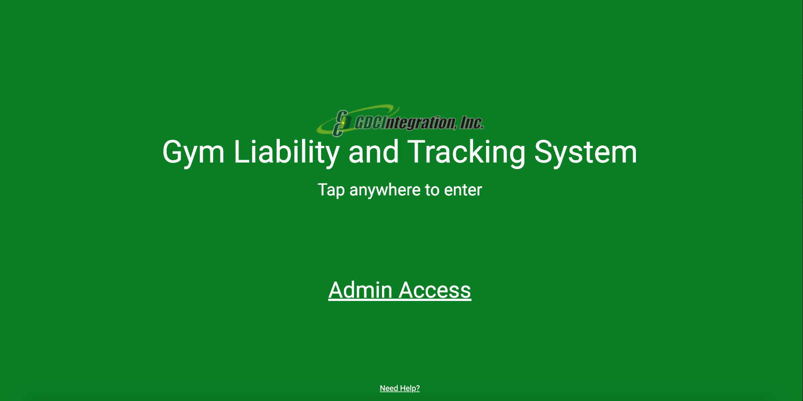
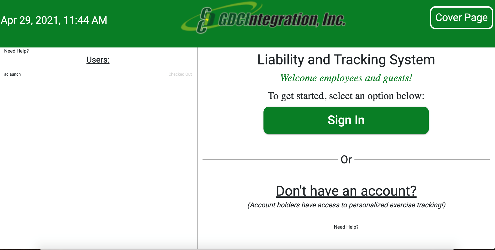
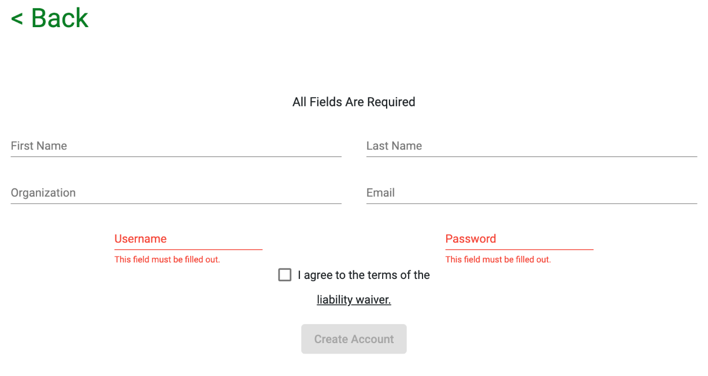
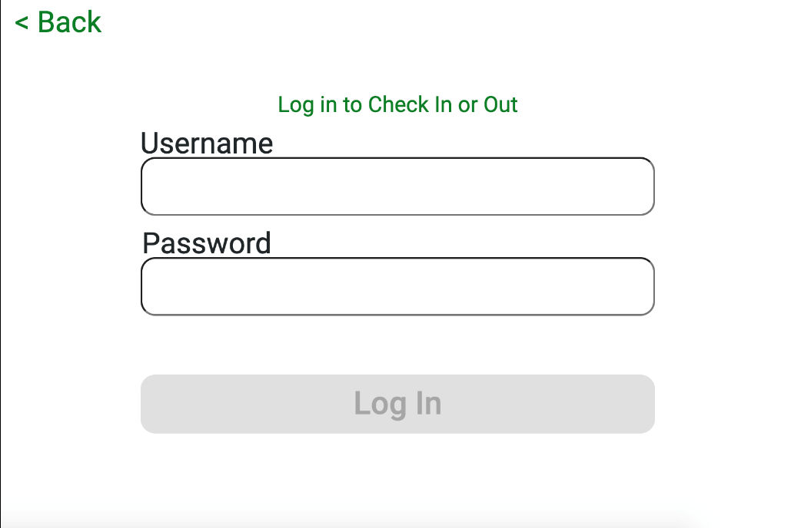
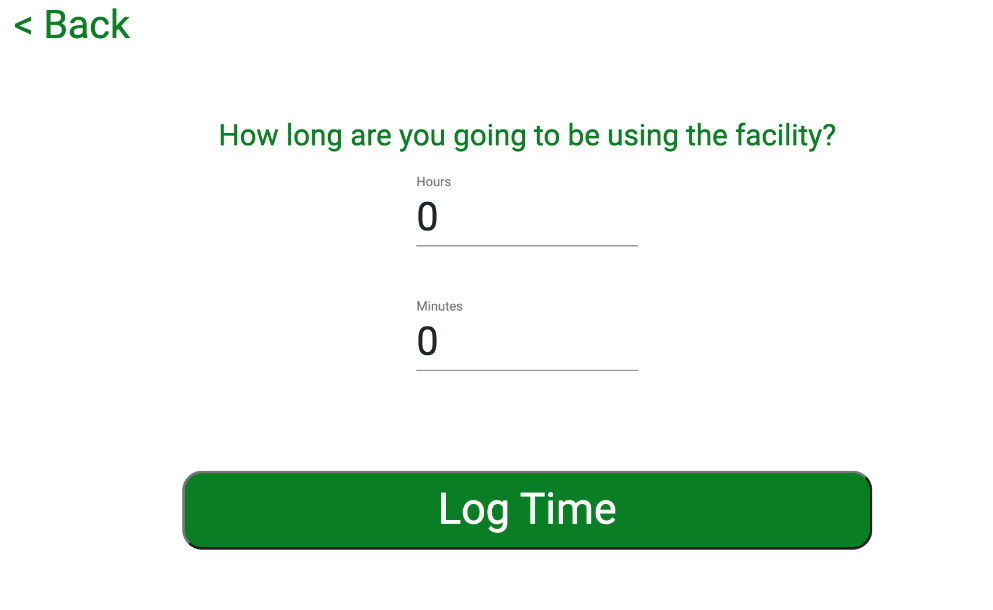
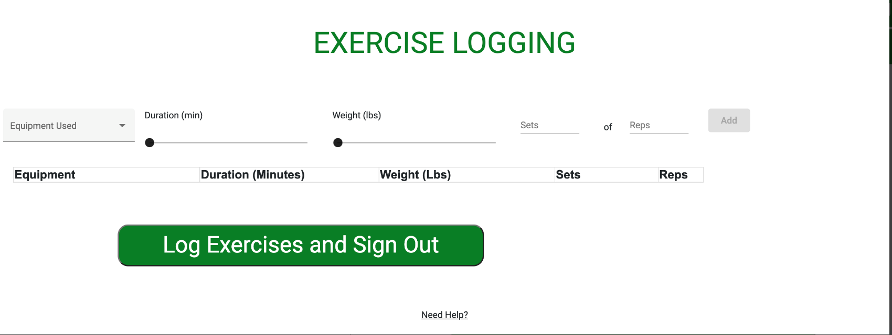

This is the welcome page that you will see when you first approach the tablet at the gym entrance.
As you can see, there are 3 actions that you can take from this page:
Tap anywhere to continue (for employees/guests utilizing the gym)
Admin Access
Need Help?
Follow this guide to navigate through these actions.
When you tap anywhere on the welcome page, you will be directed to this page.
Here, you have the options to:
Sign in/out (existing user)
Create an account.
Go back to the welcome page.
/Dont have an account button.png)
To create an account, click on “Don’t have an account?”
After Selecting “Don’t have an account?”, you will be brought to this page to create one:
To create an account, you will need to fill out these required fields:
You can select Liability Waiver to view the waiver.
After selecting “Create Account”, your account will automatically be signed in, as you can see your profile “checked in” on the left side of the dashboard.
/Sign in button.png)
To sign in to the application, click the green “Sign In” button.
After selecting “Sign In”, you will be brought to a page to enter your credentials.
After entering your credentials, click “Log In”.
/Log in (existing user).png)
You will see a page saying “It looks like you are checked out, click the button to begin checking in!"
OR
You will see a page saying "It looks like you are checked in, click the button to begin checking out" if you are currently signed in
Press the button accordingly.
When logged in, you will be asked how long you plan on using the gym, fill this section out accordingly.
The User List displays all currently created accounts, their status (Checked in or Checked Out) and estimated end times for active users.
After entering your estimated time in the gym, you will see your username “Checked In” on the right side of the dashboard with the estimated time you will be done using the gym.
/User Checked in.png)
After logging your exercise routine and/or logging out, you will see your username "Checked Out" on the right side of the dashboard.
/User checked out.png)
Here, you will be able to choose if you would like to log what you did in the gym, or you can skip straight to “just log me out”.
If you choose to not record your workout, you have the option to jump straight to “Just Log Me Out”.
/Just log me out button.png)
If you select “Log Daily Exercises”, this is the page you will see.
From here, you can:
Choose the equipment that you used
Duration you used it
Weight you used
Sets
Reps
You can add multiple exercises by clicking the "Add" button
/adding an exercise.png)
When you have logged your routine, clicking the "Log/Email Exercises and Sign Out" button will save your exercise routine, send you an email of your daily routine and check you out.